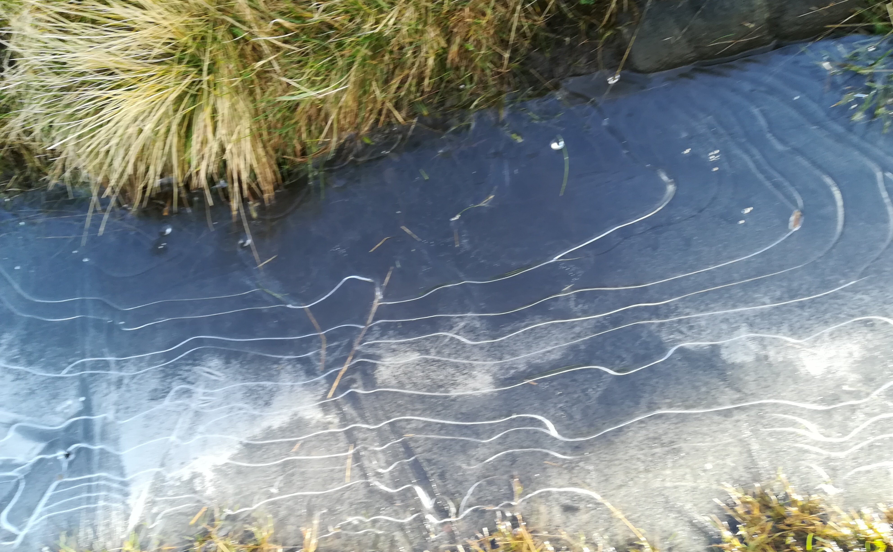

|
|

Ice patterns at Ilkey Moor
|
Conferences / workshops (past and future):
- XVIIIth Oporto Meeting on Geometry, Topology and Physics (July 8-12, 2009) at the Oporto
University
Main Theme: Symplectic and Poisson Geometry
- Higher Gauge Theory, TQFT and Quantum Gravity, Lisbon, 10-13 February, 2011 (Workshop), 7-13
February, 2011 (School)
- Recent Advances in Topological Quantum Field Theory (TQFT-2012) A one-week workshop on Topological
Quantum Field Theory and Quantum Gravity, to be held at the University of Lisbon on September 10–14, 2012.
-
Modelling Topological Phases of Matter
(TQFT, HQFT, premodular and higher categories, Yetter-Drinfeld and crossed modules in disguise). Leeds 5-8 July 2016.
- Higher Structures Lisbon (deformation theory, operads, higher categories developments & applications), 24-27 July 2017.
-Workshop on Higher Gauge Theory: Where should we look for higher gauge matter?
University of Leeds 28th February - 2nd March 2018.
- (Leaps through) Loops in Leeds: Motion groups and related topics School of Mathematics, University of Leeds, 1 - 4 July 2019
-Topological Quantum Field Theory thematic sessions: 2020. (Online), July 2020.
|